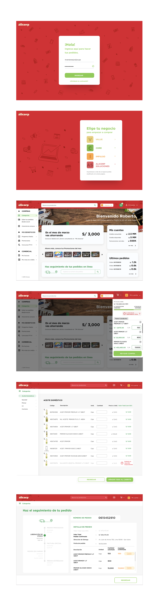

Sales management website for authorized Alicorp retailers — redesigning a portal that only 14 out of 2,000 users were actually using.
Alicorp is the largest Peruvian consumer goods company, with operations across South America. It exports to more than 23 countries and manages over 125 leading brands in consumer goods, industrial products, and animal nutrition.
Increase 2% on annual digital sales and have 55% of regular customers adopt the website as their primary purchase and commercial management channel.
In 2016, Alicorp launched a reseller website to review stock and order products. Two years later, only 14 out of approximately 2,000 resellers were using it monthly.
As a UX Analyst, I was in charge of understanding users' behavior to propose substantial improvements. I led user research, prototyping, testing, and demo reviews for the full project.
Design Process"If using the website I can confirm the products I'm buying, I will use it."
"I want to do it by my own, without needing the approval of the seller — all automated is the best."
Users need to trust the information the website provides — updated stock data, products, and discounts. They also need to receive exactly what they ordered.
Users need to find what they're looking for quickly. Discounts must be visible and easy to find. The interface should mirror familiar ERP and Excel-like interfaces.
Even though they like talking with sales reps, users need the freedom and independence to buy what they want without external approvals.
Before moving into high-fidelity design, I translated the user flows and pain point priorities into low-fidelity wireframes. This stage allowed us to rapidly explore layout options, validate information architecture with stakeholders, and align on interaction patterns — without the overhead of polished visuals.
Wireframe screens — add your images here
Based on the wireframes and research findings, I built a first high-fidelity prototype to capture the core flows: product search with SKU lookup, the discount discovery section, and the cart and checkout experience. This prototype was the basis for the moderated usability testing sessions.
1er prototipo screens — add your images here
Users mostly use and prefer desktop devices to purchase and manage business operations. Even small businesses have a desktop and a little office in their stores.
Small business users manage purchases via Excel files. The interface needed to mirror familiar spreadsheet-like patterns for faster adoption.
Resellers reuse previous orders with minimal changes. A re-order flow based on purchase history became a core feature of the final design.
The redesigned portal incorporated a powerful search bar with SKU lookup, a discount discovery section, automated stock validation, and an order tracking timeline — all built around the mental models resellers already had from Excel and ERP tools.

Want to work together? I'm open to hybrid product roles where research and design live side by side.